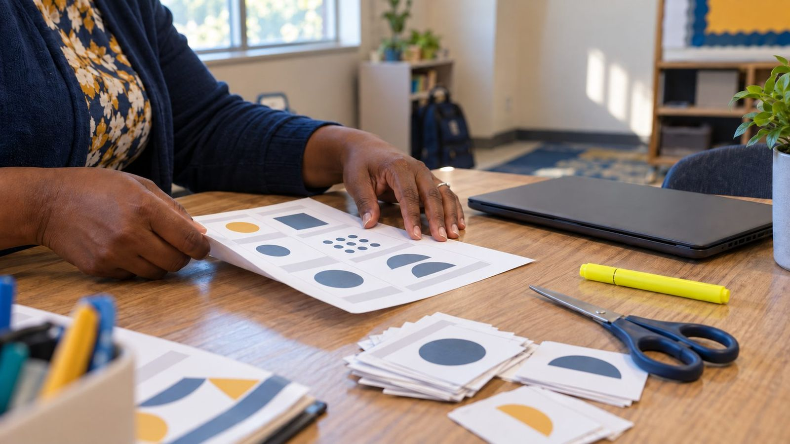

Guía del facilitador
Cómo está construido el banco y cómo planificar una sesión o una lección con él.

Empiece por la evidencia, no por la herramienta
Las ELE actualizadas plantean una sola pregunta a cada lección, taller, piloto de herramientas e iniciativa del campus: ¿cómo se ve hoy el buen aprendizaje? El uso de la tecnología, por sí solo, no es evidencia de aprendizaje. Por eso, cada actividad de este banco parte de lo que los estudiantes deben producir: una afirmación con evidencia, una acción de verificación, un borrador revisado, una decisión que puedan defender. Las herramientas vienen después.
Por eso cada página de actividad tiene una sección de Evidencia de aprendizaje y una nota que responde ¿necesita una pantalla? Ante la creciente presión por limitar el tiempo frente a las pantallas, una opción sin pantallas es una ventaja, no un plan B.
Una revisión de planificación para cualquier rol
Elija una lección, sesión de desarrollo profesional, piloto de herramientas o iniciativa del campus. Elija el rol más importante y luego pregúntese qué evidencia falta. Si el trabajo es sólido, podrá responder las cinco preguntas:
- Docente: ¿qué está diseñando el docente y qué evidencia busca?
- Estudiante: ¿qué hacen, deciden y explican los estudiantes?
- Coach: ¿cómo se dará el apoyo? Escuchar, coplanificar, modelar, medir, ajustar.
- Líder: ¿qué supervisarán los líderes? ¿Cuál es la visión, qué evidencia nos guiará, qué cambia en la enseñanza, quién podría quedar excluido y cómo entenderán las familias el cambio?
- IA: ¿dónde tiene cabida la IA, si es que la tiene?
Tres alfabetizaciones, entretejidas
- Alfabetización en IA generativa
- Cómo predicen los modelos, por qué se equivocan con total seguridad, sesgos, instrucciones (prompts), divulgación del uso de IA y cómo mantener el juicio humano en el proceso. 64 actividades
- Ciudadanía digital
- Privacidad, huella digital, seguridad y protección, comunicación respetuosa, créditos y derechos de autor, equilibrio y acceso. 45 actividades
- Alfabetización mediática
- Lectura lateral y SIFT, propósito y sesgo, medios manipulados y sintéticos, feeds y algoritmos, y creación responsable de medios. 33 actividades
Cómo está organizada cada actividad
- De un vistazo: tiempo, modalidad, público, tamaño del grupo, ejes y los indicadores ELE que desarrolla, cada uno enlazado al marco.
- Paso a paso: una secuencia cronometrada con qué decir y hacer, más notas para el facilitador sobre conceptos erróneos probables.
- Papel o pantalla: cómo realizarla sin dispositivos, cómo realizarla en formato digital y si la pantalla aporta algo.
- Evidencia de aprendizaje: lo que debería poder ver o recopilar si funcionó.
- Adaptaciones: otros niveles de grado, educación superior, estudiantes bilingües emergentes y más.
- Hojas: un paquete listo para imprimir en tamaño carta (tarjetas, clasificaciones, hojas de trabajo, organizadores, lecturas, rúbricas) con una clave para el facilitador en la última página.
Aprendizaje profesional que modela el aula
La mayoría de las actividades de aprendizaje profesional piden a los educadores que primero hagan la tarea como aprendices y luego den un paso atrás para analizarla como docentes, coaches o líderes. Esa doble pasada importa: las personas enseñan la versión de una habilidad que han vivido. Cierre cada sesión con el paso “Llévelo a sus estudiantes” y lleve la evidencia de los estudiantes a una PLC (comunidad de aprendizaje profesional) o a una conversación de coaching.
Uso seguro de herramientas de IA con estudiantes
- Use solo herramientas aprobadas por su distrito o institución y respete sus requisitos de edad.
- Con estudiantes menores de 13 años, el docente maneja cualquier herramienta de IA en una pantalla compartida. Para la mayoría de las lecciones de este banco, las respuestas simuladas de IA impresas funcionan igual de bien.
- Nunca ingrese nombres, calificaciones ni otra información personal de estudiantes en una herramienta de IA.
- Todos los artículos, publicaciones y respuestas de IA simulados de estas hojas son ficticios y están identificados como tales.
Tiempo frente a pantallas: propósito, no solo minutos
En Texas, las reglas sobre los teléfonos cambiaron primero. La ley HB 1481 (2025) exige que cada distrito y escuela chárter prohíba que los estudiantes usen dispositivos personales de comunicación durante la jornada escolar, pero la ley excluye de manera explícita los dispositivos que proporciona la escuela. Cómo usan los estudiantes las computadoras portátiles y tabletas de la escuela sigue siendo una decisión de cada distrito, y hacia allí se ha movido la conversación.
La investigación apunta en la misma dirección. La declaración de políticas 2026 de la Academia Americana de Pediatría va más allá de los simples límites de tiempo y se enfoca en la calidad, el contexto y la conversación. El Censo de Common Sense (2021) encontró que los preadolescentes pasan en promedio 5 horas 33 minutos y los adolescentes 8 horas 39 minutos al día con pantallas por entretenimiento, sin contar la escuela ni las tareas, y solo 8 y 14 minutos de ese tiempo se dedican a crear. En la escuela, la pregunta no es solo cuánto tiempo, sino para qué: crear, investigar y practicar con retroalimentación no es lo mismo que mirar.
Este banco está hecho para esa pregunta. Cada actividad tiene una versión sin pantallas y una respuesta clara a ¿necesita una pantalla?, y 33 no necesitan ningún dispositivo. No existe una medida nacional independiente del tiempo que los estudiantes pasan en dispositivos de la escuela, así que empiece con sus propios datos.
Actividades para la conversación sobre el tiempo frente a pantallas
- ¿Esto necesita una pantalla? Aprendizaje profesional
- Tiempo de pantalla, tiempo verde K–2
- Primero la evidencia, luego las herramientas Aprendizaje profesional
- La revisión de las cinco preguntas antes de implementar Aprendizaje profesional
- El juego del feed 6–8, 9–12
- Autopsia de un algoritmo 9–12
Ver las 33 actividades sin pantallas
Fuentes
Comparta y adapte
Todo el contenido está bajo CC BY-SA 4.0. Cópielo, tradúzcalo y adáptelo para su campus dando crédito. Para alinear sus propias lecciones o sesiones de desarrollo profesional con las ELE, pruebe el Asistente de alineación con las ELE u obtenga el PDF de las ELE.